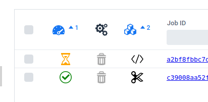
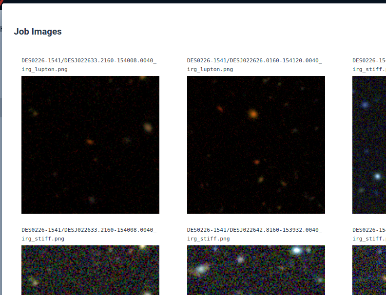
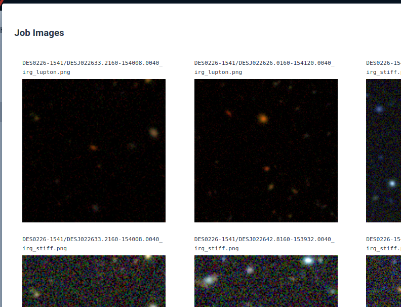

Job Status¶
The Job Status column, labeled by the icon, indicates if a job is in progress , is complete , or has failed .
The Job Type column, labeled by the icon, indicates the type of the job. For most people this is either a database query or a cutout type.
Jobs may be sorted on multiple columns. For example, you may want to list jobs in progress at the top of the list, where they are then sorted by job type. Alternatively, you may want to see all of you database query jobs first, sorted by status so you can see all the query jobs still in progress at the top.
Filter the job list by typing part of the desired job name or ID into the column header text fields. Job IDs are unique, but the same job name can be applied to multiple jobs, providing a way to filter your job list to show a group of related jobs.

Job details and results are accessed by clicking the name or ID in the list. The dialog contains a button to open a listing of the generated output files for download (see below for details about programmatic access to job output files). If the job is a cutout job, and there color image files were generated using the Lupton or STIFF methods, an image gallery is provided for easy image browsing. If the job is a database query job, the job query text is displayed with a button to conveniently copy the query back into the editor on the DB Access page.
 
